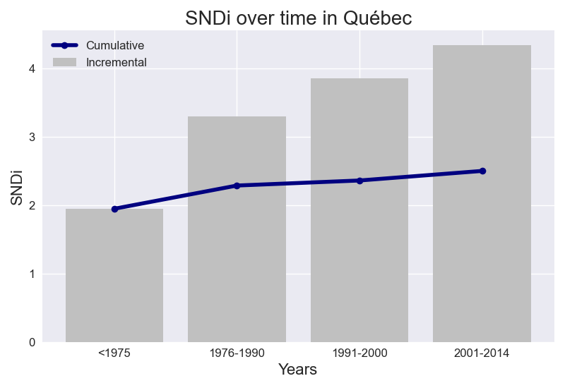

Street-network Sprawl is a way to measure urban sprawl, worldwide, through the connectedness of the streets. Less sprawl means more connected, more walkable streets. Well-connected streets – like New York City’s grid – are more walkable and can be served by public transit. Our measure for street-network sprawl is the sprawl index, or the SNDi (Street Network Disconnectedness Index). A higher SNDi means less-connected streets – i.e., more sprawl. The street network is permanent, and its connectivity affects the livability and environmental footprint of cities for decades and centuries to come. In places with more connected streets, residents drive less and walk more. Sprawl is associated with worse outcomes for health, the environment, overconsumption, social segregation, and equity. Here, we explore how sprawl in Québec has changed over time.
The cumulative and incremental level of street network disconnectivity in Québec change over time in the same way.

Taking into account all roads in Québec, the overall level of street network sprawl is 2.59. New street construction in Québec has been increasing in disconnectivity over time. This increase has slowed: between <1975 and 1976-1990, SNDi rose by 1.35 points, but between 1991-2000 and 2001-2014, it rose by just 0.48.
The levels of SNDi for each time period in Québec's 4 most populous cities are plotted too. The cities in Québec that do not follow the same trend in SNDi are: Quebec, Sherbrooke, Trois-Rivières.
To date, Québec is the 6th-most disconnected region out of the 9 regions in Canada. It has largely maintained its place in the ranks since 1975. In <1975, it ranked 6th, ranked 4th in 1976-1990 and ranked 5th in 1991-2000 and ranked 5th in 2001-2014.